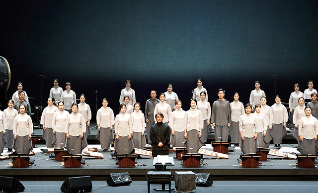

여성합창단

BUPYEONG WOMEN’S CHOIR
부평구립 여성합창단
- 단체소개
- 아름다운 통일된 음색과 신비로운 화성감을 자랑하며 전국 최고 수준의 아마추어합창단이라는 평을 받고 있으며 국내외 대회 및 행사는 물론 지하철, 병원, 학교 등 찾아가는 등 다양한 활동을 하고있다.
- 수상내역
- 2017.09.22. 제14회 거제전국합창경연대회 동상
- 2017.09.09. 제1회 보령머드전국합창경연대회 동상
- 2015.12.18. 인천광역시 자원봉사의 날 페스티벌 대상
- 2015.12.01 제4회 유관순 합창경연대회 유관순상 대상